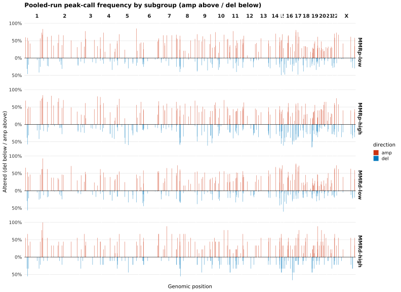
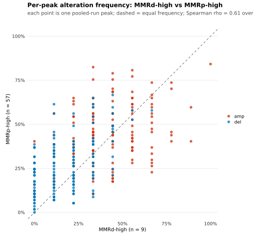
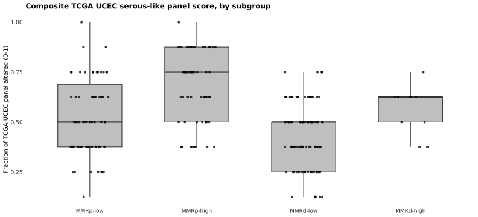
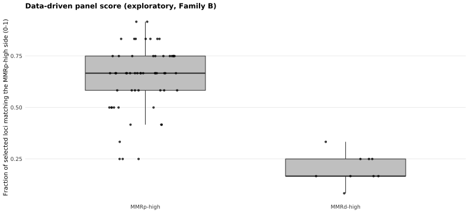

ATTEND — 10. Recurrent copy number in aneuploidy-high tumours
sceriff0
2026-09-06
Last updated: 2026-09-25
Checks: 7 0
Knit directory:
attend_aneuploidy/analysis/
This reproducible R Markdown analysis was created with workflowr (version 1.7.2). The Checks tab describes the reproducibility checks that were applied when the results were created. The Past versions tab lists the development history.
Great! Since the R Markdown file has been committed to the Git repository, you know the exact version of the code that produced these results.
Great job! The global environment was empty. Objects defined in the global environment can affect the analysis in your R Markdown file in unknown ways. For reproduciblity it’s best to always run the code in an empty environment.
The command set.seed(20260622) was run prior to running
the code in the R Markdown file. Setting a seed ensures that any results
that rely on randomness, e.g. subsampling or permutations, are
reproducible.
Great job! Recording the operating system, R version, and package versions is critical for reproducibility.
Nice! There were no cached chunks for this analysis, so you can be confident that you successfully produced the results during this run.
Great job! Using relative paths to the files within your workflowr project makes it easier to run your code on other machines.
Great! You are using Git for version control. Tracking code development and connecting the code version to the results is critical for reproducibility.
The results in this page were generated with repository version 53d4271. See the Past versions tab to see a history of the changes made to the R Markdown and HTML files.
Note that you need to be careful to ensure that all relevant files for
the analysis have been committed to Git prior to generating the results
(you can use wflow_publish or
wflow_git_commit). workflowr only checks the R Markdown
file, but you know if there are other scripts or data files that it
depends on. Below is the status of the Git repository when the results
were generated:
Ignored files:
Ignored: .Rhistory
Ignored: .Rproj.user/
Ignored: .mcr_cache/
Ignored: data/aneu_scores.csv
Ignored: data/attend_barcodes.csv
Ignored: data/attend_data.xlsx
Ignored: data/clinical_gianlu_data.csv
Ignored: data/cnv_annotations/
Ignored: data/gistic/
Ignored: data/hrd_scores.csv
Ignored: data/msi_scores.csv
Ignored: data/old2_gistic/
Ignored: data/old_gistic/
Ignored: data/seg/
Ignored: data/tcga_2013/
Ignored: data/tmb_scores.csv
Ignored: data/variant_annotations/
Ignored: gistic2.sif
Ignored: output/clean_data/
Ignored: output/gistic_input/
Note that any generated files, e.g. HTML, png, CSS, etc., are not included in this status report because it is ok for generated content to have uncommitted changes.
These are the previous versions of the repository in which changes were
made to the R Markdown (analysis/10-recurrent-cna.Rmd) and
HTML (docs/10-recurrent-cna.html) files. If you’ve
configured a remote Git repository (see ?wflow_git_remote),
click on the hyperlinks in the table below to view the files as they
were in that past version.
| File | Version | Author | Date | Message |
|---|---|---|---|---|
| html | 53d4271 | sceriff0 | 2026-09-25 | :wrench: site building |
| Rmd | 61b26bc | bolt3x | 2026-09-21 | :memo: Say on the page which cut reports 07 and 10 are reporting |
| Rmd | 0c4840a | bolt3x | 2026-09-14 | :art: One vocabulary, one order, and a page that says why a figure is missing |
| Rmd | 4c9d280 | bolt3x | 2026-09-14 | :bug: The data-driven panel could only find MMRp-high loci, and Q1/Q2 answered with the wrong instruments |
| Rmd | 75cb39f | bolt3x | 2026-09-14 | :bug: polipo was configured as 21S188 while the data spells it 21_5_188 |
| Rmd | 0348325 | bolt3x | 2026-09-13 | :art: AS High / AS Low, arcsine + t-test on the score, no n=, arms back to red/light blue |
| Rmd | c2471cf | bolt3x | 2026-09-13 | :sparkles: Answer the two CNA questions in the field’s own figures |
| Rmd | 793a8f2 | bolt3x | 2026-09-07 | :recycle: Reorder the site 00-11, split 07, fold concordance into 01, add ProMisE |
Question. Are there recurrent copy-number alterations in MMRd aneuploidy-high tumours, and if so are they the same ones that recur in MMRp aneuploidy-high tumours? Cohort. All 245 patients for the Part 1 baseline; Parts 2 and 3 are the contrast, MMRd-high (n = 9) against MMRp-high (n = 57). Reads. ASCETS arm calls, ClassifyCNV segments, and the five GISTIC runs in data/gistic/. Out of scope. Mutations and the gene panels -> 08-tp53-and-gene-panels. The TCGA cascade -> 07-molecular-classification.
This report asks two questions, in order, and the second one only means anything if the first is answered yes:
- Are there recurrent CNAs in MMRd aneuploidy-high tumours? Part 2.
- If so, are they the same ones that recur in MMRp aneuploidy-high tumours? Part 3.
Part 1 is the baseline both are read against: what recurs across the whole cohort, before any split. Plot conventions follow TCGA UCEC (Kandoth et al., Nature 2013); the rationale for each is in 00-methods.
The asymmetry that governs every reading below. At n = 9 in the MMRd-high stratum, a peak that is present and stable to leave-one-out is informative; a peak that is absent is not, because absence and low power are indistinguishable at this n. So question 2 can be answered “yes, the same peaks recur” with evidence, but it can never be answered “no, they are different peaks” — only “we could not show they are the same”. Every table below reports support counts and confidence intervals rather than a presence/absence verdict.
Part 1 is descriptive frequencies with no significance testing. Part 2’s recurrence call is GISTIC 2.0’s own q-value on the MMRd-high run — the field’s standard — with frequency and leave-one-out retention as its support. The formal between-group testing is confined to Part 3, and splits into the two inference families 00-methods defines.
Part 1 — the baseline: what recurs across the whole cohort
Two resolutions of the same question, coarsest first. Both are descriptive frequencies with no significance testing: GISTIC 2.0 q-values are the field’s standard for recurrence significance and are not applied to these figures.
Arm level
Cohort frequency of whole-arm gains and losses from the
ASCETS arm-level calls — the recurrent events that
define endometrial subtypes, such as 1q and 8q gain in serous-like
tumours. Gains extend right, losses left, and arms are shown in
genome order (order_arms_genomic()), not sorted by
frequency. Each arm’s fraction is out of its own
evaluable samples — calls of LOWCOV/NC/NA are excluded
from that arm’s denominator, not counted as neutral — and that count is
printed on the axis label (arm (n=…)) so a reduced denominator is
visible rather than hidden. The bars below show the 20 most-altered
eligible arms out of roughly 44 in the genome — not every arm —
where eligible means evaluable in at least 50% of samples, the identical
rule top_arms applies to the arm annotation tracks on the oncoplots in
Part 1 above, so neither figure can rank a poorly-covered arm ahead of a
well-covered one. An uncallable arm’s CNV_
arm_freq <- recurrent_arm_calls(load_ascets_calls(), n_top = attend_cnv$oncoplot_arms)
if (is.null(arm_freq)) {
note_skip("No ASCETS arm-level calls (data/ascets/) — skipping recurrent-CNV summary.")
} else {
# Same eligibility gate recurrent_arm_calls() applies to top_arms (freq$eligible), so
# the barplot and the oncoplot annotation tracks can never disagree about which arms
# are well-covered enough to rank. Applied BEFORE slice_head(), so a poorly-covered arm
# (e.g. an acrocentric p-arm ASCETS marks LOWCOV in most samples) cannot be promoted into
# the figure just because it scores 100% altered on a 2-sample denominator.
fr <- arm_freq$freq |>
filter(eligible) |>
slice_head(n = attend_cnv$arm_calls$n_barplot) |>
mutate(arm = factor(arm, levels = rev(order_arms_genomic(arm))))
# Axis labels carry each arm's evaluable-sample count, so a reader can see when a
# frequency rests on a reduced denominator (matched by factor level, not row order).
arm_labels <- setNames(paste0(as.character(fr$arm), " (n=", fr$n_evaluable, ")"),
as.character(fr$arm))
fr_long <- fr |>
pivot_longer(c(gain, loss), names_to = "direction", values_to = "frac") |>
mutate(frac = if_else(direction == "loss", -frac, frac))
ggplot(fr_long, aes(arm, frac, fill = direction)) +
geom_col(width = 0.8) +
geom_hline(yintercept = 0, colour = "grey40", linewidth = 0.3) +
coord_flip() +
scale_fill_manual(values = c(gain = unname(ATTEND_PALETTE["red"]),
loss = unname(ATTEND_PALETTE["blue"]))) +
scale_x_discrete(labels = arm_labels) +
scale_y_continuous(labels = function(x) paste0(abs(round(100 * x)), "%")) +
labs(title = "Recurrent arm-level SCNAs across the cohort",
subtitle = "gain (right) vs loss (left), by fraction of evaluable samples; arms in genome order",
x = NULL, y = "fraction of evaluable samples", fill = NULL) +
attend_theme()
}NOTE: No ASCETS arm-level calls (data/ascets/) — skipping recurrent-CNV summary.Genome-wide, by chromosomal location
The TCGA Fig. 1a convention: alterations plotted by position along the genome rather than summarised per arm, split into two amplitude panels — low-level and high-level (|log2 ratio| >= 1, the conventional amplification/homozygous-deletion cutoff) — gain up/red, loss down/blue. Grey vertical lines are chromosome boundaries; dashed lines mark centromeres, read from the arm-boundary table. ChrY is dropped from the axis — the cohort is uterine and therefore all female, so it carries no calls and only an empty tail.
Built from the ClassifyCNV altered segments (data/cnv_annotations/) in 1 Mb bins; the figure caption states the sample denominator and whether it came from an explicit count, the profiled-sample attribute, or the segments observed. These are descriptive frequencies with no significance testing — GISTIC q-values are the field’s standard for recurrence significance and are not applied here. This is the figure that shows focal recurrence — a narrow tall spike is a focal peak, a broad plateau is an arm-level event and also appears in the arm barplot above.
arm_bounds <- load_arm_boundaries()
pile <- segment_pileup(load_cnv_data(), arm_bounds)
if (is.null(pile)) {
note_skip("No ClassifyCNV segments (data/cnv_annotations/) or arm-boundary table — ",
"skipping the genome-wide pileup.")
} else {
# Capture the denominator + its source before any filter()/mutate() that could drop
# these custom attributes.
n_samples <- attr(pile, "n_samples")
n_samples_source <- attr(pile, "n_samples_source")
offs <- attr(pile, "chrom_offsets")
# Readable phrase for the subtitle, not the internal token (argument/profiled/observed)
# segment_pileup() records in n_samples_source — a subtitle should read as English.
n_samples_desc <- c(argument = "an explicitly supplied cohort size",
profiled = "the number of samples profiled",
observed = "the samples present in the segment data")[[n_samples_source]]
# ChrY dropped: the cohort is uterine and therefore all female, so chrY carries no
# calls and would only draw an empty axis tail. ChrX is kept.
pile <- pile |> filter(chrom != "chrY")
offs <- offs |> filter(chrom != "chrY")
# Centromere = each chromosome's p/q boundary, read from the arm-boundary table
# (never hard-coded) and converted to genome coordinates with the same offsets used
# for the chromosome-boundary lines and axis breaks.
centromeres <- arm_bounds |>
filter(str_detect(arm, "p$"), chrom != "chrY") |>
mutate(chrom = as.character(chrom)) |>
inner_join(offs |> select(chrom, offset), by = "chrom") |>
transmute(gpos = offset + end)
pl <- pile |>
select(gpos, gain_low, gain_high, loss_low, loss_high) |>
pivot_longer(-gpos, names_to = c("direction", "tier"), names_sep = "_",
values_to = "frac") |>
mutate(frac = if_else(direction == "loss", -frac, frac),
tier = factor(tier, levels = c("low", "high"),
labels = c("low-level", "high-level")))
ggplot(pl, aes(gpos, frac, fill = direction)) +
geom_col(width = attend_cnv$pileup$bin) +
geom_hline(yintercept = 0, colour = "grey40", linewidth = 0.3) +
geom_vline(xintercept = offs$offset[-1], colour = "grey85", linewidth = 0.2) +
geom_vline(data = centromeres, aes(xintercept = gpos), colour = "grey60",
linewidth = 0.3, linetype = "dashed") +
facet_grid(tier ~ ., scales = "free_y") +
scale_fill_manual(values = c(gain = unname(ATTEND_PALETTE["red"]),
loss = unname(ATTEND_PALETTE["blue"]))) +
scale_x_continuous(breaks = offs$mid, labels = str_remove(offs$chrom, "^chr"),
expand = c(0, 0)) +
scale_y_continuous(labels = function(x) paste0(abs(round(100 * x)), "%")) +
labs(title = "Genome-wide recurrent SCNA pileup (TCGA Fig. 1a convention)",
subtitle = paste0("gain (up) vs loss (down), fraction of ", n_samples,
" samples (", n_samples_desc, "); ",
attend_cnv$pileup$bin / 1e6,
" Mb bins; dashed lines = centromeres; no significance testing applied"),
x = "chromosome", y = "fraction of samples", fill = NULL) +
attend_theme() +
theme(panel.grid.major.x = element_blank(),
panel.grid.minor.x = element_blank())
}
| Version | Author | Date |
|---|---|---|
| 53d4271 | sceriff0 | 2026-09-25 |
Part 2 — Question 1: are there recurrent CNAs in MMRd aneuploidy-high tumours?
Part 1 pooled every patient. This part asks the same recurrence question inside the MMRd-high stratum alone, which is the group the study is about, and which Part 1’s pooled frequencies can hide entirely: 9 tumours out of 245 move a cohort-wide frequency by at most a few percent, so a peak recurrent in all 9 is invisible in Part 1.
Setup and the two ID spaces
GISTIC and .seg sample ids are sequencing barcodes; the master is keyed on pid. Joining them directly gives an all-NA result with no error, so every lookup below goes through group_of_barcode(), built on the same crosswalk as everything else.
The grouping variable scna_group composes is_mmrd() (IHC-based, MSI deliberately not a criterion) with aneuploidy_class at the primary cut 0.1, the same definition Part 1’s frequency comparison uses.
⚠️ A 0.1-cut result, and cannot yet be anything else. Every other aneuploidy figure is drawn at both cuts (0.1 and 0.2, 00-methods); this one cannot — its inputs are the per-stratum GISTIC runs on disk, prepared from the primary cut. Re-running at 0.2 means regenerating them (code/prep_gistic_group_segs.R, runbooks/gistic.md).
have_master <- exists("master") && !is.null(master) && nrow(master) > 0
if (have_master && !"scna_group" %in% names(master)) master <- add_scna_group(master)
cw_scna <- tryCatch(build_barcode_pid(load_gianlu_clinical_data(), make_id_cfg()),
error = function(e) NULL)
have_cw <- !is.null(cw_scna) && nrow(cw_scna) > 0
group_of_barcode <- function(ids) {
if (!have_master || !have_cw)
return(factor(rep(NA_character_, length(ids)), levels = attend_scna$group_levels))
barcode_scna_group(ids, master, cw_scna)
}
gx_dir <- here("data", attend_cnv$gistic$dir)
run_dirs <- c(all = file.path(gx_dir, "all"),
mmrp_high = file.path(gx_dir, "mmrp_high"),
mmrp_low = file.path(gx_dir, "mmrp_low"),
mmrd_low = file.path(gx_dir, "mmrd_low"),
mmrd_high = file.path(gx_dir, "mmrd_high"))
have_gistic <- dir.exists(run_dirs[["all"]])
# Which of the five runs exist and are usable — gistic_run_inventory(), attend_scna.R.
gistic_inv <- gistic_run_inventory(run_dirs)
loo_dir_n <- { d <- file.path(gx_dir, "loo")
if (dir.exists(d)) length(list.dirs(d, recursive = FALSE)) else 0L }
print(knitr::kable(gistic_inv, row.names = FALSE, caption = paste0(
"GISTIC runs found under `", gx_dir, "`. Every panel below names the run it needs; a run ",
"listed MISSING or INCOMPLETE is why the corresponding section is skipped. Leave-one-out ",
"sub-runs found: ", loo_dir_n, ".")))
Table: GISTIC runs found under `/hpcnfs/home/ieo7660/workflowR/attend_aneuploidy/data/gistic`. Every panel below names the run it needs; a run listed MISSING or INCOMPLETE is why the corresponding section is skipped. Leave-one-out sub-runs found: 9.
|run |files |status |
|:---------|:-----|:-------------------|
|all |4/4 |complete |
|mmrp_high |0/4 |MISSING - no folder |
|mmrp_low |0/4 |MISSING - no folder |
|mmrd_low |0/4 |MISSING - no folder |
|mmrd_high |0/4 |MISSING - no folder |if (any(gistic_inv$status != "complete"))
cat("\nTo rebuild a missing run: `MODE=groups Rscript code/prep_gistic_group_segs.R`",
"writes output/gistic_input/attend_<group>.seg, then `MODE=groups bash",
"code/run_gistic.sh` runs GISTIC over them. run_one() SKIPS a group whose .seg is",
"absent, so a group with no folder at all usually means its .seg was never written,",
"while a folder holding only gistic_inputs.mat means GISTIC started and failed.\n")
To rebuild a missing run: `MODE=groups Rscript code/prep_gistic_group_segs.R` writes output/gistic_input/attend_<group>.seg, then `MODE=groups bash code/run_gistic.sh` runs GISTIC over them. run_one() SKIPS a group whose .seg is absent, so a group with no folder at all usually means its .seg was never written, while a folder holding only gistic_inputs.mat means GISTIC started and failed.if (!have_master) {
cat("Master table absent — run report 01 first.\n")
} else if (!have_gistic) {
cat("**GISTIC outputs absent** (`", run_dirs[["all"]], "`).\n\n",
"Run `MODE=groups sbatch code/run_gistic.sh`, then `MODE=loo`. ",
"this report is skipped, not silently empty.\n", sep = "")
}
# The pooled run's per-sample call matrix, loaded HERE rather than at its first plotting use.
# Both of this report's questions read it — question 1's recurrence table and the mirror plot
# below, and every test in Part 3 — so it has to be assigned above the first of them. It used
# to be created inside the panel-score chunk, which was fine while that chunk came first and
# became a forward reference the moment the report was reordered around the two questions:
# the kind that knits in an interactive session, where the object is already in the global
# environment, and dies on a clean build. code/tests/test_rmd_chunk_order.R pins it.
pooled <- if (have_gistic) load_gistic_lesions_at(run_dirs[["all"]]) else NULLPeaks come from five runs; per-sample calls come from one. Five GISTIC2 runs feed this report: the pooled cohort and the four scna_group strata. GISTIC’s background model is cohort-specific, so the same tumour gets a different thresholded call depending on which cohort it was run in, and comparing calls across runs would compare five different null models. The two roles are therefore kept apart:
- Peak definition reads the stratified runs: question 1 takes the union of the pooled and MMRd-high runs’ peaks, the set-overlap table all five (gistic_peak_union()), so a peak private to the small MMRd-high stratum, which the pooled run’s genome-wide threshold would bury, is still discoverable.
- Per-sample calls for every between-group comparison are read only from the pooled run’s all_lesions.conf_*.txt. The one exception is a question-1 locus the pooled run never called: it is scored on the MMRd-high run’s own calls, labelled so, and cannot enter question 2.
The cohort this contrast conditions on, at both cuts. Fisher tests whether MMR status and aneuploidy class are associated at all — if they are, the MMRd-high cell is small by construction and everything below is underpowered.
# Both cuts: from the master, not a run — what the strata WOULD be at the other cut.
if (all(c("mmr_group", "aneuploidy_class") %in% names(master))) {
cc <- add_aneuploidy_cuts(master) |> filter(!is.na(mmr_group), !is.na(aneuploidy_class))
print(knitr::kable(cc |> count(as_cut_lab, MMR = mmr_group, aneu = as_label(aneuploidy_class)) |>
pivot_wider(names_from = aneu, values_from = n, values_fill = 0),
caption = "MMR x aneuploidy contingency at both cuts (the GISTIC runs used the primary)"))
print(cc |> group_by(as_cut_lab) |> summarise(
fisher_p = signif(fisher.test(table(mmr_group, aneuploidy_class))$p.value, 3)))
}
Table: MMR x aneuploidy contingency at both cuts (the GISTIC runs used the primary)
|as_cut_lab |MMR | AS High| AS Low|
|:----------|:----|-------:|------:|
|AS cut 0.1 |MMRp | 57| 67|
|AS cut 0.1 |MMRd | 9| 100|
|AS cut 0.2 |MMRp | 35| 89|
|AS cut 0.2 |MMRd | 4| 105|
# A tibble: 2 × 2
as_cut_lab fisher_p
<fct> <dbl>
1 AS cut 0.1 4.82e-11
2 AS cut 0.2 2.75e- 7The answer: which loci recur inside MMRd-high
Candidates are the union of the pooled run’s peaks and the MMRd-high run’s own peaks, matched by wide-limit overlap on chromosome and direction (q1_recurrence_table()). A locus is recurrent only if GISTIC calls it on the MMRd-high run, q <= 0.25. No frequency cut is used: aneuploidy-high tumours carry enough arm-level events that “altered in half of them” is what burden alone predicts. Beside each call: the MMRd-high tumours carrying it, with a Wilson 95% interval (at n = 9 a normal interval leaves [0, 1]), and the fraction of leave-one-out MMRd-high GISTIC re-runs (data/gistic/loo/) that retain the peak.
Calls come from the pooled run wherever the locus
has a pooled peak; a locus only the MMRd-high run found is scored on
that run’s own calls, and calls_from says so. Retention is
informal stability selection (Meinshausen & Bühlmann 2010) at
leave-one-out — a descriptive robustness diagnostic, not an FDR
statement: retained in 9/9 re-runs, the locus depends on no single
tumour; in 3, it is one or two tumours’ worth of signal. Presence here
is evidence; absence at this n is not.
mmrd_run <- load_gistic_lesions_at(run_dirs[["mmrd_high"]])
loo_dirs <- { d <- file.path(gx_dir, "loo")
if (dir.exists(d)) list.dirs(d, full.names = TRUE, recursive = FALSE) else character(0) }
loo_q1 <- if (!is.null(mmrd_run) && length(loo_dirs)) loo_stability(mmrd_run$peaks, loo_dirs) else NULL
q1_tbl <- NULL
if (is.null(pooled) || is.null(mmrd_run)) {
cat("Question 1 needs both the pooled and the MMRd-high GISTIC runs — see the inventory above.\n")
} else {
# cat(), not warning(): opts_chunk hides warnings, and a stale run must be visible.
stale <- group_of_barcode(rownames(mmrd_run$mat))
if (any(!is.na(stale) & stale != "MMRd-high"))
cat("**Stale run:**", sum(!is.na(stale) & stale != "MMRd-high"), "sample(s) in the MMRd-high",
"GISTIC run are no longer MMRd-high on the current master.\n\n")
q1_tbl <- q1_recurrence_table(pooled, mmrd_run, group_of_barcode(rownames(pooled$mat)),
fdr = attend_cnv$gistic$fdr_cutoff, loo = loo_q1)
cat("**", sum(q1_tbl$recurrent), " loci are recurrent in MMRd-high** (q <= ",
attend_cnv$gistic$fdr_cutoff, " on its own run; ",
sum(q1_tbl$recurrent & q1_tbl$found_in != "both runs"), " found by that run alone). ",
"Leave-one-out re-runs found: ", length(loo_dirs), ".\n\n", sep = "")
print(knitr::kable(
utils::head(q1_tbl[, c("locus", "direction", "found_in", "q_stratum", "recurrent", "n", "n_altered",
"freq", "ci_lo", "ci_hi", "loo_retained_frac", "calls_from")], 30),
digits = 3, caption = paste("Question 1 — candidate loci in MMRd aneuploidy-high, recurrent calls",
"first, with Wilson 95% intervals and leave-one-out retention")))
}Question 1 needs both the pooled and the MMRd-high GISTIC runs — see the inventory above.The same answer in the form the field reads it
The table above is the answer; this is that answer drawn in the form
the field reads it — why that form is the canonical one is in 00-methods.
maftools::readGistic() reads the MMRd-high run’s
own four GISTIC 2.0 output files
(find_gistic_files(dir = ...), so the pooled run’s files
cannot be picked up instead) and gisticChromPlot() draws
the G-score along the linearised genome, amplifications right, deletions
left, with the significance line at 0.25. This is a
stratum-specific run at n = 9: peak discovery
at that n is what the union-of-five design in Part 3 qualifies, and
every per-sample call quoted anywhere in this report still comes from
the pooled run.
gx_mmrd <- find_gistic_files(dir = run_dirs[["mmrd_high"]])
have_maft <- requireNamespace("maftools", quietly = TRUE)
fdr_g <- attend_cnv$gistic$fdr_cutoff
# cat(), not message() — see note_skip() in attend_plots.R for why (message = FALSE).
if (!have_maft) {
cat("`maftools` is not installed — `renv::install(\"bioc::maftools\")`, then",
"`renv::snapshot()`. The peak table above stands on its own.\n")
} else if (is.null(gx_mmrd) || any(vapply(gx_mmrd, is.null, logical(1)))) {
cat("The MMRd-high GISTIC run is missing at least one of the four files readGistic()",
"requires (all_lesions / amp_genes / del_genes / scores.gistic) under `",
run_dirs[["mmrd_high"]], "`. Run `MODE=groups sbatch code/run_gistic.sh`.\n", sep = "")
} else {
g_mmrd <- tryCatch(
maftools::readGistic(gisticAllLesionsFile = gx_mmrd$all_lesions,
gisticAmpGenesFile = gx_mmrd$amp_genes,
gisticDelGenesFile = gx_mmrd$del_genes,
gisticScoresFile = gx_mmrd$scores, isTCGA = FALSE),
error = function(e) { cat("readGistic(): ", conditionMessage(e), "\n"); NULL })
if (!is.null(g_mmrd)) {
maftools::gisticChromPlot(gistic = g_mmrd, fdrCutOff = fdr_g, markBands = "all")
}
}The MMRd-high GISTIC run is missing at least one of the four files readGistic()requires (all_lesions / amp_genes / del_genes / scores.gistic) under `/hpcnfs/home/ieo7660/workflowR/attend_aneuploidy/data/gistic/mmrd_high`. Run `MODE=groups sbatch code/run_gistic.sh`.The same peaks as a bubble plot: q-value against the number of genes the wide peak spans, so a peak carrying the signal on a handful of genes separates visually from a broad one that does not localise. Read it as the companion to the chromosome plot above — same peaks, same 0.25 cutoff, arranged by focality rather than by position.
if (exists("g_mmrd") && !is.null(g_mmrd)) {
maftools::gisticBubblePlot(gistic = g_mmrd, fdrCutOff = fdr_g)
} else {
cat("No MMRd-high GISTIC object — see the message above.\n")
}No MMRd-high GISTIC object — see the message above.Where those calls sit on the genome
Peak-call frequency from the pooled run, amplifications above the axis and deletions below, split by subgroup and chromosome. The visual counterpart to the composite score: if MMRd-high really phenocopies MMRp-high, their two panels should have peaks in the same places.
if (exists("pooled") && !is.null(pooled)) {
grp3 <- group_of_barcode(rownames(pooled$mat))
freq_tbl3 <- scna_freq_table(pooled$mat, grp3)
p3 <- scna_mirror_plot(freq_tbl3, pooled$peaks,
title = "Pooled-run peak-call frequency by subgroup (amp above / del below)")
if (!is.null(p3)) print(p3)
}
| Version | Author | Date |
|---|---|---|
| 53d4271 | sceriff0 | 2026-09-25 |
Part 3 — Question 2: are they the same peaks that recur in MMRp aneuploidy-high?
The mirror plot above already puts the two strata side by side; this part measures the comparison rather than eyeballing it. The question asked is a concordance question — are they the same peaks — and the three tests at the end of this part are difference tests, which cannot answer it; why, and why agreement is reported first, is in 00-methods. Agreement is measured by three instruments that scale from coarse to fine — the peak sets (Jaccard), the G-score profiles (the two runs back to back), and the per-peak frequencies (a scatter against the diagonal, with Spearman’s rho). The difference tests follow, and are reported whatever they say.
Do the two strata even have the same peaks available to them?
The prior structural question, before any call is compared: how much do the five GISTIC runs’ significant-peak sets overlap at all, as pairwise Jaccard. It matters for question 2 in a specific way — if the MMRd-high run carries peaks no other run finds, then “the same peaks recur in both groups” is not even the right shape of answer for those loci, because the pooled run’s genome-wide threshold buried them. Peaks private to a single run are listed separately, and they are the ones to read first. Jaccard is confounded by run size — GISTIC’s power grows with n, so a nine-patient run finds few peaks and scores low against a large run even when all of them are shared — so the overlap coefficient (|A ∩ B| / the smaller set, 1 when the small run’s peaks are a subset) is printed beside it, with each run’s peak count.
union_peaks <- gistic_peak_union(run_dirs)
if (is.null(union_peaks)) {
cat("No GISTIC lesions parsed from any of the five run folders — skipped.\n")
} else {
pss <- peak_set_structure(union_peaks)
n_pk <- paste(names(pss$n_peaks), pss$n_peaks, sep = " = ", collapse = ", ")
print(knitr::kable(round(pss$jaccard, 2),
caption = paste0("Jaccard overlap of significant-peak sets between the five GISTIC runs (peaks: ", n_pk, ")")))
print(knitr::kable(round(pss$overlap, 2),
caption = "Overlap coefficient — not penalised for a small run whose peaks are a subset of a large one's"))
if (nrow(pss$private))
print(knitr::kable(pss$private,
caption = "Peaks private to a single run (no overlapping peak in any other)"))
}
Table: Jaccard overlap of significant-peak sets between the five GISTIC runs (peaks: all = 326)
| | all|
|:---|---:|
|all | 1|
Table: Overlap coefficient — not penalised for a small run whose peaks are a subset of a large one's
| | all|
|:---|---:|
|all | 1|
Table: Peaks private to a single run (no overlapping peak in any other)
|source |union_id |
|:------|:-----------|
|all |U001_1_amp |
|all |U002_1_amp |
|all |U003_1_amp |
|all |U004_1_amp |
|all |U005_1_amp |
|all |U006_1_amp |
|all |U007_1_amp |
|all |U008_1_amp |
|all |U009_1_amp |
|all |U010_1_del |
|all |U011_1_del |
|all |U012_1_del |
|all |U013_1_del |
|all |U014_1_del |
|all |U015_1_del |
|all |U016_1_del |
|all |U017_1_del |
|all |U018_1_del |
|all |U019_1_del |
|all |U020_10_amp |
|all |U021_10_amp |
|all |U022_10_amp |
|all |U023_10_amp |
|all |U024_10_amp |
|all |U025_10_amp |
|all |U026_10_amp |
|all |U027_10_amp |
|all |U028_10_del |
|all |U029_10_del |
|all |U030_10_del |
|all |U031_10_del |
|all |U032_10_del |
|all |U033_10_del |
|all |U034_11_amp |
|all |U035_11_amp |
|all |U036_11_amp |
|all |U037_11_amp |
|all |U038_11_amp |
|all |U039_11_amp |
|all |U040_11_amp |
|all |U041_11_amp |
|all |U042_11_amp |
|all |U043_11_del |
|all |U044_11_del |
|all |U045_11_del |
|all |U046_11_del |
|all |U047_11_del |
|all |U048_11_del |
|all |U049_11_del |
|all |U050_11_del |
|all |U051_11_del |
|all |U052_12_amp |
|all |U053_12_amp |
|all |U054_12_amp |
|all |U055_12_amp |
|all |U056_12_amp |
|all |U057_12_amp |
|all |U058_12_amp |
|all |U059_12_del |
|all |U060_12_del |
|all |U061_12_del |
|all |U062_12_del |
|all |U063_12_del |
|all |U064_12_del |
|all |U065_12_del |
|all |U066_12_del |
|all |U067_12_del |
|all |U068_12_del |
|all |U069_13_amp |
|all |U070_13_amp |
|all |U071_13_amp |
|all |U072_13_amp |
|all |U073_13_del |
|all |U074_13_del |
|all |U075_13_del |
|all |U076_13_del |
|all |U077_13_del |
|all |U078_14_amp |
|all |U079_14_amp |
|all |U080_14_amp |
|all |U081_14_amp |
|all |U082_14_amp |
|all |U083_14_del |
|all |U084_14_del |
|all |U085_14_del |
|all |U086_14_del |
|all |U087_15_amp |
|all |U088_15_amp |
|all |U089_15_amp |
|all |U090_15_amp |
|all |U091_15_del |
|all |U092_15_del |
|all |U093_15_del |
|all |U094_15_del |
|all |U095_15_del |
|all |U096_16_amp |
|all |U097_16_amp |
|all |U098_16_amp |
|all |U099_16_amp |
|all |U100_16_amp |
|all |U101_16_amp |
|all |U102_16_amp |
|all |U103_16_del |
|all |U104_16_del |
|all |U105_16_del |
|all |U106_16_del |
|all |U107_16_del |
|all |U108_16_del |
|all |U109_16_del |
|all |U110_16_del |
|all |U111_16_del |
|all |U112_16_del |
|all |U113_17_amp |
|all |U114_17_amp |
|all |U115_17_amp |
|all |U116_17_amp |
|all |U117_17_amp |
|all |U118_17_del |
|all |U119_17_del |
|all |U120_17_del |
|all |U121_17_del |
|all |U122_17_del |
|all |U123_17_del |
|all |U124_17_del |
|all |U125_17_del |
|all |U126_18_amp |
|all |U127_18_amp |
|all |U128_18_amp |
|all |U129_18_amp |
|all |U130_18_amp |
|all |U131_18_amp |
|all |U132_18_amp |
|all |U133_18_del |
|all |U134_18_del |
|all |U135_18_del |
|all |U136_18_del |
|all |U137_18_del |
|all |U138_18_del |
|all |U139_19_amp |
|all |U140_19_amp |
|all |U141_19_amp |
|all |U142_19_amp |
|all |U143_19_amp |
|all |U144_19_amp |
|all |U145_19_amp |
|all |U146_19_amp |
|all |U147_19_amp |
|all |U148_19_amp |
|all |U149_19_del |
|all |U150_19_del |
|all |U151_19_del |
|all |U152_19_del |
|all |U153_19_del |
|all |U154_19_del |
|all |U155_19_del |
|all |U156_19_del |
|all |U157_19_del |
|all |U158_19_del |
|all |U159_19_del |
|all |U160_2_amp |
|all |U161_2_amp |
|all |U162_2_amp |
|all |U163_2_amp |
|all |U164_2_amp |
|all |U165_2_amp |
|all |U166_2_amp |
|all |U167_2_amp |
|all |U168_2_del |
|all |U169_2_del |
|all |U170_2_del |
|all |U171_2_del |
|all |U172_2_del |
|all |U173_2_del |
|all |U174_2_del |
|all |U175_20_amp |
|all |U176_20_amp |
|all |U177_20_amp |
|all |U178_20_amp |
|all |U179_20_amp |
|all |U180_20_amp |
|all |U181_20_amp |
|all |U182_20_amp |
|all |U183_20_del |
|all |U184_20_del |
|all |U185_20_del |
|all |U186_20_del |
|all |U187_20_del |
|all |U188_20_del |
|all |U189_20_del |
|all |U190_21_amp |
|all |U191_21_amp |
|all |U192_21_amp |
|all |U193_21_amp |
|all |U194_21_amp |
|all |U195_21_del |
|all |U196_21_del |
|all |U197_22_amp |
|all |U198_22_amp |
|all |U199_22_amp |
|all |U200_22_del |
|all |U201_22_del |
|all |U202_22_del |
|all |U203_22_del |
|all |U204_22_del |
|all |U205_3_amp |
|all |U206_3_amp |
|all |U207_3_amp |
|all |U208_3_amp |
|all |U209_3_amp |
|all |U210_3_amp |
|all |U211_3_amp |
|all |U212_3_amp |
|all |U213_3_del |
|all |U214_3_del |
|all |U215_3_del |
|all |U216_3_del |
|all |U217_3_del |
|all |U218_3_del |
|all |U219_3_del |
|all |U220_4_amp |
|all |U221_4_amp |
|all |U222_4_amp |
|all |U223_4_amp |
|all |U224_4_amp |
|all |U225_4_del |
|all |U226_4_del |
|all |U227_4_del |
|all |U228_4_del |
|all |U229_4_del |
|all |U230_4_del |
|all |U231_5_amp |
|all |U232_5_amp |
|all |U233_5_amp |
|all |U234_5_amp |
|all |U235_5_amp |
|all |U236_5_amp |
|all |U237_5_del |
|all |U238_5_del |
|all |U239_5_del |
|all |U240_5_del |
|all |U241_5_del |
|all |U242_5_del |
|all |U243_5_del |
|all |U244_5_del |
|all |U245_5_del |
|all |U246_5_del |
|all |U247_5_del |
|all |U248_5_del |
|all |U249_6_amp |
|all |U250_6_amp |
|all |U251_6_amp |
|all |U252_6_amp |
|all |U253_6_amp |
|all |U254_6_amp |
|all |U255_6_amp |
|all |U256_6_del |
|all |U257_6_del |
|all |U258_6_del |
|all |U259_6_del |
|all |U260_6_del |
|all |U261_6_del |
|all |U262_6_del |
|all |U263_6_del |
|all |U264_7_amp |
|all |U265_7_amp |
|all |U266_7_amp |
|all |U267_7_amp |
|all |U268_7_amp |
|all |U269_7_amp |
|all |U270_7_amp |
|all |U271_7_amp |
|all |U272_7_del |
|all |U273_7_del |
|all |U274_7_del |
|all |U275_7_del |
|all |U276_7_del |
|all |U277_7_del |
|all |U278_7_del |
|all |U279_7_del |
|all |U280_7_del |
|all |U281_7_del |
|all |U282_8_amp |
|all |U283_8_amp |
|all |U284_8_amp |
|all |U285_8_amp |
|all |U286_8_amp |
|all |U287_8_amp |
|all |U288_8_amp |
|all |U289_8_amp |
|all |U290_8_del |
|all |U291_8_del |
|all |U292_8_del |
|all |U293_8_del |
|all |U294_8_del |
|all |U295_8_del |
|all |U296_8_del |
|all |U297_9_amp |
|all |U298_9_amp |
|all |U299_9_amp |
|all |U300_9_amp |
|all |U301_9_amp |
|all |U302_9_amp |
|all |U303_9_amp |
|all |U304_9_amp |
|all |U305_9_del |
|all |U306_9_del |
|all |U307_9_del |
|all |U308_9_del |
|all |U309_9_del |
|all |U310_9_del |
|all |U311_9_del |
|all |U312_9_del |
|all |U313_9_del |
|all |U314_X_amp |
|all |U315_X_amp |
|all |U316_X_amp |
|all |U317_X_amp |
|all |U318_X_amp |
|all |U319_X_del |
|all |U320_X_del |
|all |U321_X_del |
|all |U322_X_del |
|all |U323_X_del |
|all |U324_X_del |
|all |U325_X_del |
|all |U326_X_del |The two G-score profiles, back to back
The Jaccard above is set membership; this is amplitude.
coGisticChromPlot() draws the MMRd-high and MMRp-high runs’
G-scores on one linearised genome, vertically opposed, so a peak present
in both at similar height reads as a shared event and a peak on one side
only reads as private. Amplifications and deletions are separate figures
because they are separate GISTIC statistics, not two halves of one axis.
Each run is its own GISTIC run, so its background model is its own —
which is exactly why this figure is read for where the peaks
are and never for whether one group’s G-score is numerically larger.
read_run <- function(nm) {
gx <- find_gistic_files(dir = run_dirs[[nm]])
if (is.null(gx) || any(vapply(gx, is.null, logical(1)))) return(NULL)
tryCatch(maftools::readGistic(gisticAllLesionsFile = gx$all_lesions,
gisticAmpGenesFile = gx$amp_genes,
gisticDelGenesFile = gx$del_genes,
gisticScoresFile = gx$scores, isTCGA = FALSE),
error = function(e) NULL)
}
g_d <- if (have_maft) read_run("mmrd_high") else NULL
g_p <- if (have_maft) read_run("mmrp_high") else NULL
if (!have_maft) {
cat("`maftools` is not installed — the concordance scatter below needs none of it",
"and still runs.\n")
} else if (is.null(g_d) || is.null(g_p)) {
cat("Need a complete four-file GISTIC run for BOTH strata (`", run_dirs[["mmrd_high"]],
"` and `", run_dirs[["mmrp_high"]], "`). Run `MODE=groups sbatch code/run_gistic.sh`.\n",
sep = "")
} else {
for (ty in c("Amp", "Del"))
maftools::coGisticChromPlot(gistic1 = g_d, gistic2 = g_p,
g1Name = "MMRd-high", g2Name = "MMRp-high",
type = ty, fdrCutOff = fdr_g)
}Need a complete four-file GISTIC run for BOTH strata (`/hpcnfs/home/ieo7660/workflowR/attend_aneuploidy/data/gistic/mmrd_high` and `/hpcnfs/home/ieo7660/workflowR/attend_aneuploidy/data/gistic/mmrp_high`). Run `MODE=groups sbatch code/run_gistic.sh`.Peak by peak, one group against the other
The figure the question is literally asking for. Every pooled-run peak is one point: its alteration frequency in MMRd-high (x) against MMRp-high (y). A point on the dashed diagonal recurs at the same rate in both groups, and distance off it is how specific a peak is to one stratum. The loci question 1 called recurrent are labelled, because they are the ones the question is about. Both axes come from the pooled run’s per-sample calls, one background model; at n = 9 an MMRd-high frequency takes only 10 values, so points sit on bands by construction.
Spearman’s rho has no fixed benchmark here — peaks near zero in both groups and correlated peaks on one arm inflate it, small n deflates it — so it is printed against two references (concordance_null()): rho between random splits of the same MMRd-high + MMRp-high patients at the same sizes, the most concordant “the same” can look at this n (patients are permuted, so arm-level peak correlation is in that null too), and rho against MMRp-low, a group expected to differ. It is given over all peaks and over question 1’s recurrent loci; those were selected for MMRd-high frequency, which biases rho downward.
if (!is.null(pooled)) {
grp_c <- group_of_barcode(rownames(pooled$mat))
freq_c <- scna_freq_table(pooled$mat, grp_c)
rec_c <- if (is.null(q1_tbl)) NULL else q1_tbl[q1_tbl$recurrent & !is.na(q1_tbl$pooled_peak_id), ]
labs_c <- if (NROW(rec_c)) stats::setNames(rec_c$locus, rec_c$pooled_peak_id) else NULL
p_conc <- scna_concordance_plot(freq_c, pooled$peaks, "MMRd-high", "MMRp-high",
label_peaks = labs_c,
title = "Per-peak alteration frequency: MMRd-high vs MMRp-high")
if (is.null(p_conc)) {
cat("Concordance scatter skipped — one of the two strata has no pooled-run calls.\n")
} else {
print(p_conc)
fmt_cn <- function(cn, what) {
if (is.null(cn)) return(paste0(what, ": fewer than 3 peaks, not computed."))
sprintf(paste("%s (%d peaks): rho = %.2f. Same-population splits: median %.2f, 95%% range",
"[%.2f, %.2f], %.0f%% at or below the observed. Against %s: rho = %.2f."),
what, cn$n_peaks, cn$rho, cn$null_median, cn$null_lo, cn$null_hi,
100 * cn$frac_null_below, cn$floor_group, cn$ref_rho)
}
cn_rec <- if (NROW(rec_c) >= 3) concordance_null(pooled$mat, grp_c, cols = rec_c$pooled_peak_id) else NULL
cat("\n", fmt_cn(concordance_null(pooled$mat, grp_c), "All pooled-run peaks"), "\n\n",
fmt_cn(cn_rec, "Question 1's recurrent loci"), "\n", sep = "")
}
}
| Version | Author | Date |
|---|---|---|
| 53d4271 | sceriff0 | 2026-09-25 |
All pooled-run peaks (329 peaks): rho = 0.61. Same-population splits: median 0.71, 95% range [0.63, 0.77], 1% at or below the observed. Against MMRp-low: rho = 0.60.
Question 1's recurrent loci: fewer than 3 peaks, not computed.The answer, locus by locus
Question 2 is conditional, so this keeps only the loci question 1 called recurrent (q2_same_loci_table()) and scores each in MMRp-high from the pooled run’s calls, with both Wilson 95% intervals and the difference. “The same” needs the MMRp-high interval to sit high too; wide overlapping intervals at n = 9 mean not determinable, never different. A locus only the MMRd-high run found has no pooled peak: kept, NA, with the reason.
q2_tbl <- if (is.null(q1_tbl)) NULL else
q2_same_loci_table(q1_tbl, pooled, group_of_barcode(rownames(pooled$mat)))
if (!NROW(q2_tbl)) {
cat("No locus was called recurrent in MMRd-high, so question 2 does not arise in this build.\n")
} else {
print(knitr::kable(q2_tbl, digits = 3, caption = paste(
"Question 2 — each MMRd-high recurrent locus scored in MMRp-high on the pooled run,",
"Wilson 95% intervals for both (target = MMRd-high, ref = MMRp-high)")))
}No locus was called recurrent in MMRd-high, so question 2 does not arise in this build.The primary endpoint — a pre-specified serous-like panel score
Why a composite score rather than testing peaks one at a time. At n ≈ 9 no individual peak has the power to show a difference, and testing hundreds of peaks in a group that small produces false positives, not findings. A single composite score over a fixed, externally-specified set of loci concentrates the evidence into one test.
What the panel is. The 12 loci (attend_scna$panel) are fixed a priori from the TCGA UCEC recurrent-peak list (Kandoth et al. 2013). No locus was added, removed, or re-directioned after looking at ATTEND’s own GISTIC output. Each locus is directional — a deletion at MYC does not count as serous-like — matched by match_panel_peaks().
Why the panel is fixed in advance, and what that costs. A data-driven panel — the loci that best separate MMRd-high from MMRp-high in ATTEND — is a legitimate analysis, but it is not this one, and it cannot be tested the way this one is. Selecting loci uses the group labels, so the resulting score is no longer independent of those labels under the null; permuting the labels afterwards does not undo the selection, because the selection was made on the unpermuted labels. The permutation null then understates the variability actually present and the nominal p is not the type-I error rate (Kriegeskorte et al., Nat Neurosci 2009, on circular analysis; the general problem is post-selection inference). At n ≈ 9 against a few hundred candidate peaks, selection alone can manufacture near-complete separation from noise, so this is not a small correction.
Three routes make a data-driven panel valid, and each is a different study: hold-out, where loci are chosen on one split and scored on an untouched one — impossible at this n; selection nested inside the resampling, where every permutation re-derives its own panel from scratch so the null absorbs the selection — valid here, and strictly less powerful than the fixed panel, because the null it builds is wider; or a global test that selects nothing, such as a permutational multivariate test across the whole peak matrix, which is data-driven in that it uses every locus but answers “is the profile different at all?” rather than “is it serous-like?”.
So pre-specification is not a claim to the better analysis. It buys one thing: a single nominal p that can be read at face value. It costs power against any difference the panel is not aimed at — if these tumours reach aneuploidy by a route TCGA’s serous tumours do not use, a fixed serous panel is pointed the wrong way and returns a null result that means “not serous-like”, never “not different”. Choosing the fixed panel here is choosing to spend the little power n ≈ 9 affords on the one hypothesis that has external support, rather than to spread it across every peak or to buy apparent significance with selection. A data-driven panel found in these data would be reported as hypothesis-generating, alongside this test rather than in place of it.
Loci with no matching pooled-run peak of the right direction leave the denominator rather than counting as unaltered, so the score is a fraction of resolvable loci.
The test is a label permutation (B = 10^{4}), which makes no distributional assumption — appropriate at this n. A Wilcoxon is reported alongside. A permutation p is bounded below by 1/(B+1), so a floor-level result is reported as p < … rather than as an exact tiny value.
The permutation does not control SCNA burden. If MMRp-high is simply more aneuploid, every panel scores higher there. The burden control (panel_specificity_test()) sets the observed difference against B random panels drawn from the pooled run’s peaks with the same number of amplification and deletion loci the panel resolved; a burden difference moves those too. Its resampling unit is the locus, so it reads “specific to these loci”, and it sits beside the primary endpoint, never in place of it.
if (is.null(pooled)) {
cat("Pooled GISTIC run (`", run_dirs[["all"]], "`) not readable — panel score skipped.\n", sep = "")
} else {
scores <- panel_score(pooled$mat, pooled$peaks)
grp <- group_of_barcode(rownames(pooled$mat))
cat("Panel resolved", attr(scores, "n_loci"), "of 12 pre-specified loci to a pooled-run ",
"peak of the matching direction",
if (attr(scores, "n_loci") > 0) paste0(" (", paste(attr(scores, "loci"), collapse = ", "), ").")
else ".", "\n\n")
p1 <- panel_score_plot(scores, grp,
title = "Composite TCGA UCEC serous-like panel score, by subgroup")
if (!is.null(p1)) print(p1)
keep2 <- !is.na(grp) & grp %in% c("MMRd-high", "MMRp-high")
if (sum(keep2) >= 3 && dplyr::n_distinct(droplevels(grp[keep2])) == 2) {
g2 <- droplevels(grp[keep2])
pt <- perm_test_two_group(scores[keep2], g2, B = attend_scna$perm_B, seed = 1)
wt <- tryCatch(stats::wilcox.test(scores[keep2] ~ g2), error = function(e) NULL)
floor_p <- 1 / (pt$B + 1)
p_txt <- if (pt$p <= floor_p + 1e-12) {
sprintf("p < %s (bounded at the B = %s resolution floor)",
format(floor_p, scientific = TRUE, digits = 1), format(pt$B, big.mark = ","))
} else sprintf("p = %.4g", pt$p)
cat("**MMRd-high (n =", sum(g2 == "MMRd-high"), ") vs MMRp-high (n =", sum(g2 == "MMRp-high"),
")**: observed difference in mean panel score =", signif(pt$stat, 3),
"; label-permutation ", p_txt, ".",
if (!is.null(wt)) paste0(" Wilcoxon p = ", signif(wt$p.value, 3), ".") else "",
"\n\nIf the ", sum(g2 == "MMRd-high"), " reach aneuploidy by a different route, the score separates from ",
"MMRp-high; if they phenocopy copy-number-high tumours, it does not.\n\n")
ps_t <- panel_specificity_test(pooled$mat[keep2, , drop = FALSE], pooled$peaks, grp[keep2],
B = attend_scna$perm_B, seed = 1)
if (!is.null(ps_t))
cat("**Burden control.** The same difference over ", format(ps_t$B, big.mark = ","),
" random panels of ", ps_t$n_amp, " amplification + ", ps_t$n_del,
" deletion pooled-run peaks: mean ", signif(ps_t$null_mean, 3), ", 95% range [",
signif(ps_t$null_lo, 3), ", ", signif(ps_t$null_hi, 3), "]; p = ", signif(ps_t$p, 3),
" that the serous loci differ from random loci.\n\n", sep = "")
} else {
cat("Fewer than 3 samples resolved to both MMRd-high and MMRp-high — permutation test skipped.\n\n")
}
}Panel resolved 8 of 12 pre-specified loci to a pooled-run peak of the matching direction (MYC, CCNE1, ERBB2, PIK3CA_SOX2, SOX17, 1q, 20q13, FGFR3). 
| Version | Author | Date |
|---|---|---|
| 53d4271 | sceriff0 | 2026-09-25 |
**MMRd-high (n = 9 ) vs MMRp-high (n = 57 )**: observed difference in mean panel score = 0.115 ; label-permutation p = 0.07159 . Wilcoxon p = 0.0538.
If the 9 reach aneuploidy by a different route, the score separates from MMRp-high; if they phenocopy copy-number-high tumours, it does not.
**Burden control.** The same difference over 10,000 random panels of 8 amplification + 0 deletion pooled-run peaks: mean 0.0272, 95% range [-0.11, 0.159]; p = 0.207 that the serous loci differ from random loci.The exploratory counterpart — a data-driven panel
The panel above is aimed at the TCGA serous phenotype, so a null result there means “not serous-like”, never “not different”. This asks the larger question the fixed panel cannot: is there any directional peak set that separates MMRd-high from MMRp-high? The loci are chosen from the same pooled-run all_lesions.conf_*.txt matrix, by the difference in alteration frequency between the two groups. Each locus keeps its GISTIC direction and records the group it is enriched in; a tumour scores the fraction of loci where it matches the MMRp-high side — altered where MMRp-high is enriched, unaltered where MMRd-high is — so loci enriched in either group count.
This is Family B and can never be Family A. The loci
are chosen using the group labels, so permuting those labels afterwards
would not undo the selection and the resulting null would be far too
narrow. perm_test_selected_panel() therefore re-runs the
selection inside every permutation replicate, on the permuted
labels, which is what restores the p-value’s meaning. Measured on pure
noise, the hoisted-selection version returns the minimum possible p on
100% of datasets while the nested version is uniform —
code/tests/test_nested_selection_permutation.R pins that
calibration.
Three numbers make this readable, and all three are printed: the nested p, the selected loci, and each locus’s leave-one-out selection frequency. At n ≈ 9 and 57 per group a panel whose membership turns over when one patient is dropped is not a finding, and a low LOO fraction says so directly. The global burden test below it selects nothing at all, so it stays interpretable when both panels come back null.
if (exists("pooled") && !is.null(pooled)) {
grp_sel <- group_of_barcode(rownames(pooled$mat))
keep_s <- !is.na(grp_sel) & grp_sel %in% c("MMRd-high", "MMRp-high")
if (sum(keep_s) >= 6 && dplyr::n_distinct(droplevels(grp_sel[keep_s])) == 2) {
m_sel <- pooled$mat[keep_s, , drop = FALSE]
g_sel <- droplevels(grp_sel[keep_s])
# Direction from the PEAK, never from the call's sign: all_lesions calls are unsigned.
pdir_s <- pooled$peaks$direction[match(colnames(m_sel), pooled$peaks$peak_id)]
ds <- perm_test_selected_panel(m_sel, g_sel, n_select = attend_scna$select_n,
B = attend_scna$select_perm_B, seed = 1, peak_dir = pdir_s)
floor_s <- 1 / (ds$B + 1)
cat("**Data-driven panel (Family B, exploratory).** ", attend_scna$select_n,
" loci selected from ", ncol(m_sel), " pooled-run peaks; nested permutation B = ",
format(ds$B, big.mark = ","), ". Observed difference in mean score = ",
signif(ds$stat, 3), "; ",
if (ds$p <= floor_s + 1e-12) paste0("p < ", signif(floor_s, 2), " (resolution floor)")
else paste0("p = ", signif(ds$p, 4)), ".\n\n", sep = "")
print(knitr::kable(
data.frame(locus = ds$loci, peak_direction = ds$peak_dir, enriched_in = ds$enriched_in,
loo_selection_frac = round(ds$loo_frac, 2)),
caption = paste("Selected loci and how often each survives leave-one-out;",
"a low fraction means the panel is an artefact of one patient")))
# Same plot type as the pre-specified score, relabelled: asserting "TCGA UCEC panel"
# on this figure would claim provenance this panel does not have.
p2 <- panel_score_plot(ds$score, g_sel,
title = "Data-driven panel score (exploratory, Family B)",
ylab = "Fraction of selected loci matching the MMRp-high side (0-1)")
if (!is.null(p2)) print(p2)
gb <- perm_test_global_burden(m_sel, g_sel, B = attend_scna$perm_B, seed = 1)
fg <- 1 / (gb$B + 1)
cat("\n**Global burden, no selection.** Mean fraction of all ", ncol(m_sel),
" peaks altered in either direction; difference = ", signif(gb$stat, 3), "; ",
if (gb$p <= fg + 1e-12) paste0("p < ", signif(fg, 2)) else paste0("p = ", signif(gb$p, 4)),
".\n\n", sep = "")
} else {
cat("Fewer than 6 samples across both MMRd-high and MMRp-high — the data-driven ",
"panel is skipped; selection needs more samples than the fixed panel, not fewer.\n",
sep = "")
}
}**Data-driven panel (Family B, exploratory).** 12 loci selected from 329 pooled-run peaks; nested permutation B = 2,000. Observed difference in mean score = 0.44; p = 0.05697.
Table: Selected loci and how often each survives leave-one-out; a low fraction means the panel is an artefact of one patient
|locus |peak_direction |enriched_in | loo_selection_frac|
|:----------------------|:--------------|:-----------|------------------:|
|Deletion Peak 72 |del |MMRp-high | 1.00|
|Amplification Peak 10 |amp |MMRp-high | 1.00|
|Amplification Peak 133 |amp |MMRd-high | 1.00|
|Amplification Peak 31 |amp |MMRp-high | 1.00|
|Deletion Peak 36 |del |MMRp-high | 1.00|
|Amplification Peak 52 |amp |MMRd-high | 0.94|
|Amplification Peak 49 |amp |MMRp-high | 0.95|
|Amplification Peak 150 |amp |MMRp-high | 0.91|
|Amplification Peak 88 |amp |MMRp-high | 0.89|
|Amplification Peak 19 |amp |MMRd-high | 0.91|
|Amplification Peak 85 |amp |MMRp-high | 0.91|
|Amplification Peak 26 |amp |MMRp-high | 0.41|
| Version | Author | Date |
|---|---|---|
| 53d4271 | sceriff0 | 2026-09-25 |
**Global burden, no selection.** Mean fraction of all 329 peaks altered in either direction; difference = 0.0591; p = 0.003.Which loci drive the score
The composite above is the primary endpoint; this breaks it into its 12 parts as a secondary, more granular view. Each locus is tested one at a time and Holm-corrected within the 12-locus family.
Holm is applied over all 12 pre-specified loci, including any that did not resolve to a pooled-run peak (p = NA) — not just the testable ones. Shrinking the family to the loci that happened to resolve would inflate significance on the survivors.
if (exists("pooled") && !is.null(pooled)) {
mp <- match_panel_peaks(pooled$peaks, attend_scna$panel)
ft_all <- scna_freq_table(pooled$mat, grp)
rows <- lapply(seq_len(nrow(mp)), function(i) {
pk <- mp$peak_id[i]
if (is.na(pk)) return(data.frame(locus = mp$locus[i], direction = mp$direction[i],
freq_mmrd_high = NA_real_, freq_mmrp_high = NA_real_,
p = NA_real_, stringsAsFactors = FALSE))
a <- ft_all[ft_all$peak_id == pk & ft_all$scna_group == "MMRd-high", ]
b <- ft_all[ft_all$peak_id == pk & ft_all$scna_group == "MMRp-high", ]
p <- NA_real_
if (nrow(a) && nrow(b)) {
tt <- matrix(c(a$n_altered, a$n - a$n_altered, b$n_altered, b$n - b$n_altered), nrow = 2)
p <- tryCatch(stats::fisher.test(tt)$p.value, error = function(e) NA_real_)
}
data.frame(locus = mp$locus[i], direction = mp$direction[i],
freq_mmrd_high = if (nrow(a)) a$freq else NA_real_,
freq_mmrp_high = if (nrow(b)) b$freq else NA_real_,
p = p, stringsAsFactors = FALSE)
})
locus_tbl <- do.call(rbind, rows)
locus_tbl$p_holm <- family_adjust(locus_tbl$p, "A", n = nrow(locus_tbl))
knitr::kable(locus_tbl, digits = 3,
caption = "The 12 pre-specified TCGA UCEC loci, Holm-adjusted within family (secondary to the composite score)")
}| locus | direction | freq_mmrd_high | freq_mmrp_high | p | p_holm |
|---|---|---|---|---|---|
| MYC | amp | 0.444 | 0.684 | 0.258 | 1.000 |
| CCNE1 | amp | 0.333 | 0.561 | 0.287 | 1.000 |
| ERBB2 | amp | 0.667 | 0.614 | 1.000 | 1.000 |
| PIK3CA_SOX2 | amp | 0.556 | 0.807 | 0.192 | 1.000 |
| SOX17 | amp | 0.667 | 0.596 | 1.000 | 1.000 |
| 1q | amp | 1.000 | 0.842 | 0.341 | 1.000 |
| 20q13 | amp | 0.556 | 0.649 | 0.713 | 1.000 |
| FGFR3 | amp | 0.222 | 0.614 | 0.036 | 0.432 |
| PTEN | del | NA | NA | NA | NA |
| RB1 | del | NA | NA | NA | NA |
| CDKN2A | del | NA | NA | NA | NA |
| TP53 | del | NA | NA | NA | NA |
sessionInfo()R version 4.3.2 (2023-10-31)
Platform: x86_64-pc-linux-gnu (64-bit)
Running under: Rocky Linux 9.5 (Blue Onyx)
Matrix products: default
BLAS/LAPACK: FlexiBLAS OPENBLAS; LAPACK version 3.11.0
locale:
[1] LC_CTYPE=C.UTF-8 LC_NUMERIC=C LC_TIME=C.UTF-8
[4] LC_COLLATE=C.UTF-8 LC_MONETARY=C.UTF-8 LC_MESSAGES=C.UTF-8
[7] LC_PAPER=C.UTF-8 LC_NAME=C LC_ADDRESS=C
[10] LC_TELEPHONE=C LC_MEASUREMENT=C.UTF-8 LC_IDENTIFICATION=C
time zone: Europe/Rome
tzcode source: system (glibc)
attached base packages:
[1] stats graphics grDevices utils datasets methods base
other attached packages:
[1] data.table_1.18.4 readxl_1.5.0 fs_2.1.0 here_1.0.2
[5] lubridate_1.9.5 forcats_1.0.1 stringr_1.6.0 dplyr_1.2.1
[9] purrr_1.0.2 readr_2.2.0 tidyr_1.3.2 tibble_3.3.1
[13] ggplot2_4.0.3 tidyverse_2.0.0
loaded via a namespace (and not attached):
[1] gtable_0.3.6 xfun_0.58 bslib_0.9.0 lattice_0.22-5
[5] tzdb_0.5.0 vctrs_0.7.3 tools_4.3.2 generics_0.1.4
[9] parallel_4.3.2 pkgconfig_2.0.3 Matrix_1.6-4 RColorBrewer_1.1-3
[13] S7_0.2.2 lifecycle_1.0.5 compiler_4.3.2 farver_2.1.2
[17] git2r_0.33.0 httpuv_1.6.12 htmltools_0.5.9 sass_0.4.10
[21] yaml_2.3.12 later_1.4.8 pillar_1.11.1 crayon_1.5.3
[25] jquerylib_0.1.4 whisker_0.4.1 cachem_1.1.0 tidyselect_1.2.1
[29] digest_0.6.39 stringi_1.8.7 splines_4.3.2 labeling_0.4.3
[33] maftools_2.18.0 rprojroot_2.1.1 fastmap_1.2.0 grid_4.3.2
[37] cli_3.6.6 magrittr_2.0.5 dichromat_2.0-0.1 survival_3.8-11
[41] utf8_1.2.6 withr_3.0.3 scales_1.4.0 promises_1.5.0
[45] bit64_4.8.6 timechange_0.4.0 rmarkdown_2.31 bit_4.6.0
[49] otel_0.2.0 workflowr_1.7.2 cellranger_1.1.0 hms_1.1.4
[53] DNAcopy_1.76.0 evaluate_1.0.5 knitr_1.51 rlang_1.2.0
[57] Rcpp_1.1.1-1.1 glue_1.8.1 rstudioapi_0.15.0 vroom_1.7.1
[61] jsonlite_2.0.0 R6_2.6.1
sessionInfo()R version 4.3.2 (2023-10-31)
Platform: x86_64-pc-linux-gnu (64-bit)
Running under: Rocky Linux 9.5 (Blue Onyx)
Matrix products: default
BLAS/LAPACK: FlexiBLAS OPENBLAS; LAPACK version 3.11.0
locale:
[1] LC_CTYPE=C.UTF-8 LC_NUMERIC=C LC_TIME=C.UTF-8
[4] LC_COLLATE=C.UTF-8 LC_MONETARY=C.UTF-8 LC_MESSAGES=C.UTF-8
[7] LC_PAPER=C.UTF-8 LC_NAME=C LC_ADDRESS=C
[10] LC_TELEPHONE=C LC_MEASUREMENT=C.UTF-8 LC_IDENTIFICATION=C
time zone: Europe/Rome
tzcode source: system (glibc)
attached base packages:
[1] stats graphics grDevices utils datasets methods base
other attached packages:
[1] data.table_1.18.4 readxl_1.5.0 fs_2.1.0 here_1.0.2
[5] lubridate_1.9.5 forcats_1.0.1 stringr_1.6.0 dplyr_1.2.1
[9] purrr_1.0.2 readr_2.2.0 tidyr_1.3.2 tibble_3.3.1
[13] ggplot2_4.0.3 tidyverse_2.0.0
loaded via a namespace (and not attached):
[1] gtable_0.3.6 xfun_0.58 bslib_0.9.0 lattice_0.22-5
[5] tzdb_0.5.0 vctrs_0.7.3 tools_4.3.2 generics_0.1.4
[9] parallel_4.3.2 pkgconfig_2.0.3 Matrix_1.6-4 RColorBrewer_1.1-3
[13] S7_0.2.2 lifecycle_1.0.5 compiler_4.3.2 farver_2.1.2
[17] git2r_0.33.0 httpuv_1.6.12 htmltools_0.5.9 sass_0.4.10
[21] yaml_2.3.12 later_1.4.8 pillar_1.11.1 crayon_1.5.3
[25] jquerylib_0.1.4 whisker_0.4.1 cachem_1.1.0 tidyselect_1.2.1
[29] digest_0.6.39 stringi_1.8.7 splines_4.3.2 labeling_0.4.3
[33] maftools_2.18.0 rprojroot_2.1.1 fastmap_1.2.0 grid_4.3.2
[37] cli_3.6.6 magrittr_2.0.5 dichromat_2.0-0.1 survival_3.8-11
[41] utf8_1.2.6 withr_3.0.3 scales_1.4.0 promises_1.5.0
[45] bit64_4.8.6 timechange_0.4.0 rmarkdown_2.31 bit_4.6.0
[49] otel_0.2.0 workflowr_1.7.2 cellranger_1.1.0 hms_1.1.4
[53] DNAcopy_1.76.0 evaluate_1.0.5 knitr_1.51 rlang_1.2.0
[57] Rcpp_1.1.1-1.1 glue_1.8.1 rstudioapi_0.15.0 vroom_1.7.1
[61] jsonlite_2.0.0 R6_2.6.1